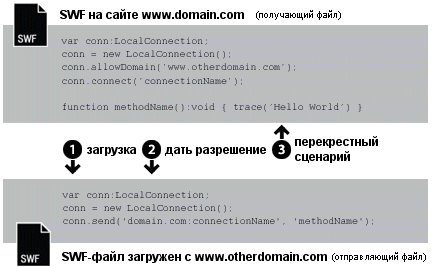
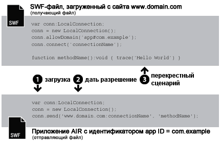

| Пакет | flash.net |
| Класс | public class LocalConnection |
| Наследование | LocalConnection |
| Язык версии: | ActionScript 3.0 |
| Версии среды выполнения: | AIR 1.0, Flash Player 9, Flash Lite 4 |
- В пределах одного SWF-файла
- Между несколькими SWF-файлами
- Между содержимым (на базе SWF или HTML) приложений AIR
- Между содержимым (на базе SWF или HTML) приложения AIR и содержимым SWF, выполняющимся в обозревателе
Поддержка в профилях AIR: эта функция поддерживается во всех компьютерных операционных системах и на всех устройствах AIR for TV, но не поддерживается на мобильных устройствах. Используйте свойство LocalConnection.isSupported, чтобы проверить наличие поддержки в среде выполнения. Дополнительные сведения о поддержке API-интерфейса в разных профилях см. в разделе «Поддержка в профилях AIR».
Примечание. На устройствах AIR for TV поддерживается обмен данными только между содержимым SWF в программах AIR.
Локальные подключения обеспечивают подобное взаимодействие между SWF-файлами, не требующее использования fscommand() или JavaScript. Объекты LocalConnection могут обмениваться данными только с файлами, запущенными на том же клиентском компьютере, но при этом могут быть запущены в различных приложениях (например, файл, запущенный в обозревателе, и SWF-файл, запущенный в Adobe AIR).
Объекты LocalConnection, созданные в ActionScript 3.0, могут взаимодействовать с объектами LocalConnection, созданными в ActionScript 1.0 или 2.0. То же самое верно также в обратном направлении: объекты LocalConnection, созданные в ActionScript 1.0 или 2.0, могут взаимодействовать с объектами LocalConnection, созданными в ActionScript 3.0. Проигрыватель Flash Player автоматически обрабатывает связь между объектами LocalConnection разных версий.
Существует три способа добавить методы обратного вызова в объект LocalConnection.
- создать подкласс для LocalConnection и добавить методы;
- задать в качестве значения свойства
LocalConnection.clientобъект, реализующий методы; - создать динамический класс, расширяющий LocalConnection, и присоединить методы в динамическом режиме.
Для того чтобы разобраться в применении объектов LocalConnection для реализации механизма взаимодействия между двумя файлами, рекомендуется определить команды, используемые в каждом файле. Один из файлов называется принимающим — в этом файле содержится вызываемый метод. Принимающий файл должен содержать объект LocalConnection и вызов метода connect(). Второй файл называется отправляющим. Этот файл и будет вызывать упомянутый метод. Отправляющий файл должен содержать другой объект LocalConnection и вызов метода send().
Применение send() и connect() зависит от размещения файлов: в том же домене, в разных доменах с предсказуемыми именами доменов или в разных доменах с непредсказуемыми или динамическими именами. В последующих абзацах описываются три разные ситуации (с примерами кода для каждой из них).
Один и тот же домен. Это самый простой способ использования объекта LocalConnection, обеспечивающий обмен данными только между теми объектами LocalConnection, которые размещены в одном и том же домене, так как взаимодействие внутри одного домена разрешено по умолчанию. При взаимодействии двух файлов из одного домена не требуется обеспечивать какие-либо специальные меры безопасности. Просто передайте одинаковое значение параметру connectionName для методов connect() и send():

// receivingLC is in http://www.domain.com/receiving.swf
receivingLC.connect('myConnection');
// sendingLC is in http://www.domain.com/sending.swf
// myMethod() is defined in sending.swf
sendingLC.send('myConnection', 'myMethod');
Разные домены с предсказуемыми именами. При взаимодействии двух SWF-файлов из разных доменов необходимо разрешить обмен данными между двумя доменами путем вызова метода allowDomain(). Также следует определить имя домена принимающего объекта LocalConnection как имя подключения в методе send():

// receivingLC is in http://www.domain.com/receiving.swf
receivingLC.allowDomain('www.anotherdomain.com');
receivingLC.connect('myConnection');
// sendingLC is in http://www.anotherdomain.com/sending.swf
sendingLC.send('www.domain.com:myConnection', 'myMethod');
Разные домены с непредсказуемыми именами. В некоторых случаях может потребоваться обеспечить большую междоменную мобильность файла с принимающим объектом LocalConnection. Для того чтобы сообщить проигрывателю Flash Player о том, что принимающий и отправляющий объекты LocalConnection находятся в разных доменах, но при этом не указывать имя домена в методе send(), поставьте перед именем подключения символ подчеркивания (_) в вызовах connect() и send(). Для обеспечения обмена данными между двумя доменами, вызовите метод allowDomain() и укажите домены, с которых следует разрешить вызовы LocalConnection. Также, чтобы разрешить вызовы со всех доменов, следует передать аргумент с подстановочным знаком (*):

// receivingLC is in http://www.domain.com/receiving.swf
receivingLC.allowDomain('*');
receivingLC.connect('_myConnection');
// sendingLC is in http://www.anotherdomain.com/sending.swf
sendingLC.send('_myConnection', 'myMethod');
Подключение Flash Player к приложению AIR Объект LocalConnection, созданный в изолированной программной среде приложения AIR, использует в качестве префикса соединения специальную строку вместо доменного имени. Это строка имеет формат app#appID.pubID, где appID — это идентификатор приложения, а pubID — идентификатор издателя приложения. (Включать идентификатор издателя следует, только если он используется в приложении AIR.) Например, если в приложении AIR используется идентификатор приложения, например com.example, а идентификатор издателя не используется, в качестве строки локального подключения можно использовать app#com.example:myConnection. Приложение AIR также должно вызывать метод allowDomain() и передать исходный домен вызывающего SWF-файла.

// receivingLC is an AIR application with app ID = com.example (and no publisher ID)
receivingLC.allowDomain('www.domain.com');
receivingLC.connect('myConnection');
// sendingLC is in http://www.domain.com/sending.swf
sendingLC.send('app#com.example:myConnection', 'myMethod');
Примечание. Если приложение AIR загружает SWF-файл, находящийся за пределами изолированной программной среды приложения AIR, для установки локального подключения с этим SWF-файлом используются те же правила, что и для установки подключения с SWF-файлом, выполняемым в среде Flash Player.
Подключение приложения AIR к Flash Player Когда приложение AIR связывается с SWF-файлом, который выполняется в среде Flash Player, необходимо разрешить связь между ними, вызвав метод allowDomain() и передав ему префикс подключения приложения AIR. Например, если в приложении AIR используется идентификатор приложения com.example, а идентификатор издателя не используется, можно передать строку app#com.example методу allowDomain(). Также следует определить доменное имя принимающего объекта LocalConnection как имя подключения в методе send() (используйте строку «localhost» в качестве домена для SWF-файлов, загруженных из локальной файловой системы):

// receivingLC is in http://www.domain.com/receiving.swf
receivingLC.allowDomain('app#com.example');
receivingLC.connect('myConnection');
// sendingLC is an AIR application with app ID = com.example (and no publisher ID)
sendingLC.send('www.domain.com:myConnection', 'myMethod');
Подключение приложения AIR к другому приложению AIR Чтобы обеспечить соединение между двумя приложениями AIR, необходимо разрешить связь между ними, вызвав метод allowDomain() и передав ему префикс подключения отправляющего приложения AIR. Например, если в отправляющем приложении используется идентификатор приложения com.example, а идентификатор издателя не используется, можно передать строку app#com.example методу allowDomain() принимающего приложения. Также следует определить префикс подключения принимающего объекта LocalConnection как имя подключения в методе send():

// receivingLC is an AIR application with app ID = com.sample (and no publisher ID)
receivingLC.allowDomain('app#com.example');
receivingLC.connect('myConnection');
// sendingLC is an AIR application with app ID = com.example (and no publisher ID)
sendingLC.send('app#com.sample:myConnection', 'myMethod');
Объекты LocalConnection можно использовать для отправки и получения данных внутри отдельного файла, но такое применение не является стандартным.
Дополнительные сведения о методах send() и connect() см. в обсуждении параметра connectionName в разделах, посвященных LocalConnection.send() и LocalConnection.connect(). Также см. материалы по allowDomain() и domain.
Связанные элементы API
flash.net.LocalConnection.allowDomain()
flash.net.LocalConnection.domain
 Скрыть унаследованные общедоступные свойства
Скрыть унаследованные общедоступные свойства Показать унаследованные общедоступные свойства
Показать унаследованные общедоступные свойства| Свойство | Определено | ||
|---|---|---|---|
| client : Object
Указывает объект, для которого вызываются методы ответного вызова. | LocalConnection | ||
 | constructor : Object
Ссылка на объект класса или функцию конструктора для данного экземпляра объекта. | Object | |
| domain : String [только для чтения]
Строка, представляющая домен расположения текущего файла. | LocalConnection | ||
| isPerUser : Boolean
Указывает, определен ли объект LocalConnection только для текущего пользователя (true) или глобально доступен для всех пользователей компьютера (false). | LocalConnection | ||
| isSupported : Boolean [статические] [только для чтения]
Свойству isSupported задается значение true, если текущая платформа поддерживает класс LocalConnection, в противном случае задается значение false. | LocalConnection | ||
| Метод | Определено | ||
|---|---|---|---|
Создает объект LocalConnection. | LocalConnection | ||
| addEventListener(type:String, listener:Function, useCapture:Boolean = false, priority:int = 0, useWeakReference:Boolean = false):void
Регистрирует объект прослушивателя события на объекте EventDispatcher для получения прослушивателем уведомления о событии. | EventDispatcher | |
Задает один или несколько доменов, которые могут направлять вызовы LocalConnection к данному экземпляру LocalConnection. | LocalConnection | ||
Задает один или несколько доменов, которые могут направлять вызовы LocalConnection к данному объекту LocalConnection. | LocalConnection | ||
Закрывает (отключает) объект LocalConnection. | LocalConnection | ||
Подготавливает объект LocalConnection к получению команд, отправленных с помощью команды send() (от отправляющего объекта LocalConnection). | LocalConnection | ||
|
Посылает событие в поток событий. | EventDispatcher | |
|
Проверяет, имеет ли объект EventDispatcher прослушиватели, зарегистрированные для определенного типа события. | EventDispatcher | |
|
Показывает, определено ли заданное свойство для объекта. | Object | |
|
Показывает, есть ли экземпляр класса Object в цепи прототипов объекта, заданного в качестве параметра. | Object | |
|
Показывает наличие заданного свойства и его перечисляемость. | Object | |
|
Удаляет прослушиватель из объекта EventDispatcher. | EventDispatcher | |
Вызывает метод с именем methodName для подключения, открытого методом connect (connectionName) (в принимающем объекте LocalConnection). | LocalConnection | ||
|
Задает доступность динамического свойства для операций цикла. | Object | |
|
Возвращает строковое представление этого объекта, отформатированного в соответствии со стандартами, принятыми для данной локали. | Object | |
|
Возвращает строковое представление заданного объекта. | Object | |
|
Возвращает элементарное значение заданного объекта. | Object | |
|
Проверяет, зарегистрирован ли прослушиватель события для указанного типа события с данным объектом EventDispatcher или любым его предшественником. | EventDispatcher | |
| Событие | Сводка | Определено | ||
|---|---|---|---|---|
| [многоадресное событие] Отправляется, когда проигрыватель Flash Player или приложение AIR перемещается в фокус операционной системы и становится активным. | EventDispatcher | ||
| Отправляется, когда исключение создается асинхронным образом — то есть в коде, изначально имеющем асинхронную природу. | LocalConnection | |||
| [многоадресное событие] Отправляется, когда проигрыватель Flash Player или приложение AIR теряет фокус системы и становится неактивным. | EventDispatcher | ||
| Отправляется, если путем вызова метода LocalConnection.send() предпринимается попытка отправить данные в другую изолированную среду. | LocalConnection | |||
| Отправляется, когда объект LocalConnection сообщает о своем состоянии. | LocalConnection | |||
client | свойство |
client:Object| Язык версии: | ActionScript 3.0 |
| Версии среды выполнения: | AIR 1.0, Flash Player 9, Flash Lite 4 |
Указывает объект, для которого вызываются методы ответного вызова. Объект по умолчанию: this (создаваемое локальное подключение). Если в свойстве client указать другой объект, методы обратного вызова будут вызываться на этом другом объекте.
Реализация
public function get client():Object public function set client(value:Object):voidВыдает
TypeError — В качестве свойства client должен быть указан объект, имеющий значение, отличное от null.
|
domain | свойство |
domain:String [только для чтения] | Язык версии: | ActionScript 3.0 |
| Версии среды выполнения: | AIR 1.0, Flash Player 9, Flash Lite 4 |
Строка, представляющая домен расположения текущего файла.
В содержимом, выполняющемся в изолированной программной среде безопасности application в Adobe AIR (содержимое, установленное с приложением AIR), среда выполнения использует строку app#, за которой следует идентификатор приложения AIR (определенный в файле дескриптора приложения), вместо обозначения супердомена. Например, connectionName для приложения с идентификатором com.example.air.MyApp connectionName преобразуется в app#com.example.air.MyApp:connectionName.
В возвращенной строке SWF-файлов, опубликованных для проигрывателя Flash Player 9 или более поздних версий, в точности указывается домен файла, включая субдомены. Например, если файл размещен на сайте www.adobe.com, то данная команда возвращает значение www.adobe.com.
Если текущим файлом является локальный файл, размещенный на клиентском компьютере и выполняющийся в проигрывателе Flash Player, то данная команда возвращает значение localhost.
Самые распространенные способы применения этого свойства: включить имя домена отправляющего объекта LocalConnection в качестве параметра метода, который будет вызываться в принимающем объекте LocalConnection, или использовать его с LocalConnection.allowDomain() для принятия команд с указанного домена. Вполне возможно, что вам и не потребуется использовать данное свойство, если речь идет об установке взаимодействия только между объектами LocalConnection, которые размещены в одном домене.
Реализация
public function get domain():StringСвязанные элементы API
isPerUser | свойство |
isPerUser:Boolean| Язык версии: | ActionScript 3.0 |
| Версии среды выполнения: | Flash Player 10.0.32, AIR 1.5.2 |
Указывает, определен ли объект LocalConnection только для текущего пользователя (true) или глобально доступен для всех пользователей компьютера (false). Это свойство влияет на содержимое, выполняемое в ОС Mac OS X; другие платформы игнорируют этот параметр. Подключения в ОС Windows и операционных системах Linux всегда устанавливаются для одного пользователя.
В Flash Player 10.0.22 и более ранних версиях, а также в AIR 1.5.1 и более ранних версиях все объекты LocalConnection в ОС Mac OS X имеют глобальную область действия. Всегда устанавливайте этому свойству значение true, если не требуется обеспечить совместимость с более ранними версиями. В будущих версиях значение по умолчанию для данного свойства может измениться на true.
Значением по умолчанию является false.
Реализация
public function get isPerUser():Boolean public function set isPerUser(value:Boolean):voidisSupported | свойство |
isSupported:Boolean [только для чтения] | Язык версии: | ActionScript 3.0 |
| Версии среды выполнения: | Flash Player 10.1, AIR 2 |
Свойству isSupported задается значение true, если текущая платформа поддерживает класс LocalConnection, в противном случае задается значение false.
Реализация
public static function get isSupported():BooleanLocalConnection | () | Конструктор |
public function LocalConnection()| Язык версии: | ActionScript 3.0 |
| Версии среды выполнения: | AIR 1.0, Flash Player 9, Flash Lite 4 |
Создает объект LocalConnection. С помощью объектов LocalConnection можно обеспечить обмен данными между различными файлами, запущенными на одном и том же клиентском компьютере.
Связанные элементы API
allowDomain | () | метод |
public function allowDomain(... domains):void| Язык версии: | ActionScript 3.0 |
| Версии среды выполнения: | AIR 1.0, Flash Player 9, Flash Lite 4 |
Задает один или несколько доменов, которые могут направлять вызовы LocalConnection к данному экземпляру LocalConnection.
Данный метод нельзя использовать в целях предоставления файлам, размещенным по незащищенным протоколам, доступа к файлам, размещенным с помощью защищенного протокола (HTTPS). Вместо этого используйте метод allowInsecureDomain().
Этот метод можно использовать для того, чтобы дочерний файл из другого домена мог осуществлять вызовы LocalConnection, направленные родительскому файлу, при этом не будет известен конечный домен, который будет источником дочернего файла. Это может случиться, например, при использовании перенаправлений для балансировки нагрузки или серверов независимых производителей. В этой ситуации можно с помощью свойства url, используемого с нагрузкой объекта LoaderInfo, получить домен для использования с методом allowDomain(). Например, рассмотрим ситуацию использования объекта Loader для загрузки дочернего файла. Как только файл будет загружен, можно будет просмотреть свойство contentLoaderInfo.url объекта Loader и извлечь домен из строки полного URL-адреса. При этом необходимо дождаться полной загрузки файла, так как свойство contentLoaderInfo.url будет иметь свое конечное правильное значение только после завершения загрузки файла.
Также может возникнуть и противоположная ситуация: создан дочерний файл, которому необходимо принимать вызовы LocalConnection от родительского файла, но домен родительского объекта неизвестен. В этой ситуации реализация данного метода подразумевает следующую проверку: совпадает ли аргумент домена с доменом свойства loaderInfo.url в загруженном файле. Здесь также необходимо извлечь домен из полного URL-адреса в свойстве loaderInfo.url. В этой ситуации нет необходимости ждать загрузки родительского файла — он уже будет загружен к тому времени, когда будет проходить загрузка дочернего файла.
При использовании данного метода необходимо продумать модель безопасности проигрывателя Flash Player. По умолчанию объект LocalConnection связан с изолированной программной средой создавшего его файла, при этом вызовы объектов LocalConnection между доменов запрещены, если только вы не вызываете метод LocalConnection.allowDomain() в принимающем файле. Однако в Adobe AIR эти ограничения по безопасности не распространяются на содержимое в изолированной программной среде безопасности application (содержимое, установленное с приложением AIR).
Дополнительные сведения о безопасности см. в разделе центра разработчиков Flash Player Безопасность.
Примечание. Метод allowDomain() изменился по сравнению с тем, каким он был в ActionScript 1.0 и 2.0. В этих ранних версиях allowDomain представлял собой реализованный метод обратного вызова. В ActionScript 3.0 allowDomain() является встроенным методом вызываемого LocalConnection. После этого изменения allowDomain() функционирует практически так же, как и flash.system.Security.allowDomain().
Параметры
... domains — Одна или несколько строк, называющих домены, с которых необходимо разрешить вызовы LocalConnection. Данный параметр имеет два особых случая:
|
Выдает
ArgumentError — Все указанные параметры должны быть строками, имеющими значение, отличное от null.
|
Связанные элементы API
allowInsecureDomain | () | метод |
public function allowInsecureDomain(... domains):void| Язык версии: | ActionScript 3.0 |
| Версии среды выполнения: | AIR 1.0, Flash Player 9, Flash Lite 4 |
Задает один или несколько доменов, которые могут направлять вызовы LocalConnection к данному объекту LocalConnection.
Метод allowInsecureDomain() функционирует так же, как и allowDomain(), за исключением того, что метод allowInsecureDomain() дополнительно разрешает SWF-файлам, поступившим не по протоколу HTTPS, отправлять вызовы LocalConnection в адрес файлов, полученных по протоколу HTTPS. Это различие имеет значение только в том случае, если метод allowInsecureDomain() вызывается из файла, который был загружен по протоколу HTTPS. Метод allowInsecureDomain() следует вызывать даже в том случае, если происходит пересечение границ HTTPS/HTTPS в рамках одного домена. По умолчанию вызовы LocalConnection, направленные от файлов, поступивших не по протоколу HTTPS, к файлам, загруженным с помощью протокола HTTPS, всегда запрещены даже в рамках одного и того же домена.
Не рекомендуется вызывать метод allowInsecureDomain(), так как он может нарушить безопасность, обеспечиваемую протоколом HTTPS. При загрузке файла по протоколу HTTPS у вас должна присутствовать обоснованная уверенность в том, что в процессе доставки по сети на данный файл не будет оказываться никакого вредного воздействия. Если вы позднее разрешите файлу, поступившему не по протоколу HTTPS, делать вызовы LocalConnection в отношении файла, загруженного с помощью HTTPS, то тем самым вы будете принимать вызовы от файла, который мог в процессе доставки подвергнуться вмешательству. Это, как правило, требует особой осторожности, так как нельзя быть полностью уверенным в подлинности вызовов LocalConnection, поступающих вашему файлу по протоколу HTTPS.
По умолчанию файлы, размещенные с помощью протокола HTTPS, доступны только для любых других файлов, размещенных посредством того же протокола (HTTPS). Такая реализация позволяет сохранить целостность, обеспечиваемую протоколом HTTPS.
Не рекомендуется использовать этот метод для переназначения характеристик по умолчанию, так как это может ослабить систему защиты протокола HTTPS. Тем не менее, это может потребоваться, например, если вам необходимо разрешить HTTP-файлам, опубликованным для Flash Player 6 и более ранних версий, доступ к HTTPS-файлам, опубликованным для Flash Player 9 и более поздних версий.
Дополнительные сведения о безопасности см. в разделе центра разработчиков Flash Player Безопасность.
Параметры
... domains — Одна или несколько строк, называющих домены, с которых необходимо разрешить вызовы LocalConnection. Для данного параметра существуют два особых случая:
|
Выдает
ArgumentError — Все указанные параметры должны быть строками, имеющими значение, отличное от null.
|
Связанные элементы API
close | () | метод |
public function close():void| Язык версии: | ActionScript 3.0 |
| Версии среды выполнения: | AIR 1.0, Flash Player 9, Flash Lite 4 |
Закрывает (отключает) объект LocalConnection. Запустите данную команду, если больше не требуется, чтобы объект принимал команды, например при необходимости инициировать команду connect() с помощью того же самого параметра connectionName в другом SWF-файле.
Выдает
ArgumentError — Экземпляр LocalConnection не подключен, поэтому не может быть закрыт.
|
Связанные элементы API
connect | () | метод |
public function connect(connectionName:String):void| Язык версии: | ActionScript 3.0 |
| Версии среды выполнения: | AIR 1.0, Flash Player 9, Flash Lite 4 |
Подготавливает объект LocalConnection к получению команд, отправленных с помощью команды send() (от отправляющего объекта LocalConnection). Объект, используемый с методом connect() называется принимающим объектом LocalConnection. Принимающий и отправляющий объекты должны запускаться с одного и того же клиентского компьютера.
Чтобы избежать состязания, определите методы, прикрепленные к принимающему объекту LocalConnection, до вызова данного метода, как показано в примере с классом LocalConnection.
По умолчанию аргумент connectionName преобразуется в значение superdomain:connectionName, в котором superdomain — это супердомен файла, содержащего команду connect(). Например, если файл, содержащий принимающий объект LocalConnection, размещается по адресу www.someDomain.com, то connectionName преобразуется в someDomain.com:connectionName. (Если файл, выполняющийся в проигрывателе Flash Player, размещается на клиентском компьютере, то параметру superdomain присваивается значение localhost.)
В содержимом, выполняющемся в изолированной программной среде безопасности application в Adobe AIR (содержимое, установленное с приложением AIR), среда выполнения использует строку app#, за которой следует идентификатор приложения AIR (определенный в файле дескриптора приложения), вместо обозначения супердомена. Например, connectionName для приложения с идентификатором com.example.air.MyApp connectionName преобразуется в app#com.example.air.MyApp:connectionName.
Вдобавок, по умолчанию проигрыватель Flash Player позволяет принимающему объекту LocalConnection принимать команды только от отправляющих объектов LocalConnection, имя подключения которых также преобразовывается в значение "superdomain:connectionName". Таким образом файлам, размещенным в одном домене, становится проще взаимодействовать друг с другом.
Если вы реализуете механизм взаимодействия только между файлами в рамках одного домена, укажите строку для connectionName, которая не будет начинаться с символа подчеркивания (_) и не будет определять имя домена (например, myDomain:connectionName). Используйте ту же самую строку в методе connect(connectionName).
При реализации механизма взаимодействия файлов в разных доменах определение строки для параметра connectionName, в начале которой стоит символ подчеркивания (_), обеспечивает большую междоменную мобильность файла с принимающим объектом LocalConnection. Далее представлены два возможных варианта:
- Если строка для
connectionNameне начинается с символа подчеркивания (_), добавляется префикс с супердоменом и двоеточием (например,myDomain:connectionName). Несмотря на то, что это гарантирует отсутствие конфликтов вашего подключения с подключениями под тем же именем, но из других доменов, любые отправляющие объекты LocalConnection должны указывать данный супердомен (например,myDomain:connectionName). Если файл с принимающим объектом LocalConnection перемещается в другой домен, то проигрыватель изменяет префикс, чтобы отразить наличие нового супердомена (например,anotherDomain:connectionName). Может потребоваться вручную отредактировать все отправляющие объекты LocalConnection так, чтобы они указывали на новый супердомен. - Если строка для
connectionNameначинается с символа подчеркивания (например,_connectionName), префикс к строке не добавляется. Это означает, что принимающий и отправляющий объекты LocalConnection используют идентичные строки для параметраconnectionName. Если с помощьюallowDomain()принимающий объект указывает, что будут приниматься подключения с любого домена, то файл с принимающим объектом LocalConnection может быть перемещен в другой домен без изменения каких-либо отправляющих объектов LocalConnection.
Дополнительные сведения см. в обзоре класса и обсуждении параметра connectionName в методеsend(), а также в материалах по allowDomain() и domain.
Примечание. Двоеточие используется как специальный символ для отделения супердомена от строки connectionName. Строка для параметра connectionName, содержащая двоеточие, является недопустимой.
При использовании данного метода необходимо продумать модель безопасности проигрывателя Flash Player. По умолчанию объект LocalConnection связан с изолированной программной средой создавшего его файла, при этом вызовы объектов LocalConnection между доменов запрещены, если только вы не вызываете метод LocalConnection.allowDomain() в принимающем файле. Можно запретить использование файлом этого метода путем установки параметра allowNetworking для тегов object и embed на странице HTML, содержащей SWF-содержимое. Однако в Adobe AIR эти ограничения по безопасности не распространяются на содержимое в изолированной программной среде безопасности application (содержимое, установленное с приложением AIR).
Дополнительные сведения о безопасности см. в разделе центра разработчиков Flash Player Безопасность.
Параметры
connectionName:String — Строка, которая соответствует имени подключения, указанному в команде connect(), которой требуется взаимодействие с принимающим объектом LocalConnection.
|
Выдает
TypeError — Параметру connectionName следует передавать ненулевое значение.
| |
ArgumentError — Данная ошибка может возникнуть по трем причинам: 1) Параметру connectionName было передано нулевое значение строки. Передайте ненулевое значение. 2) Значение, переданное параметру connectionName, содержало двоеточие (:). Двоеточие используется как специальный символ для отделения супердомена от строки connectionName в методе send(), а не в методе connect(). 3) Экземпляр LocalConnection уже подключен.
|
Связанные элементы API
send | () | метод |
public function send(connectionName:String, methodName:String, ... arguments):void| Язык версии: | ActionScript 3.0 |
| Версии среды выполнения: | AIR 1.0, Flash Player 9, Flash Lite 4 |
Вызывает метод с именем methodName для подключения, открытого методом connect (connectionName) (в принимающем объекте LocalConnection). Объект, используемый с методом send() называется отправляющим объектом LocalConnection. SWF-файлы, содержащие отправляющие и принимающие объекты, должны запускаться на одном и том же клиентском компьютере.
Объем данных, которые можно передать как параметры для этой команды, ограничен 40 килобайтами. Если при наличии правильного синтаксиса метод send() отображает ошибку ArgumentError, попробуйте разделить запросы send() на несколько команд (объем каждой не должен превышать 40 КБ).
Как уже было сказано в описании метода connect(), текущий супердомен добавляется к строке connectionName по умолчанию. При реализации механизма обмена данными между разными доменами необходимо определить параметр connectionName как в отправляющем, так и в принимающем объекте LocalConnection так, чтобы к строке connectionName не добавлялся текущий супердомен. Это можно выполнить одним из следующих способов:
- Используйте символ подчеркивания (_) в начале параметра
connectionNameотправляющих и принимающих объектов LocalConnection. С помощью методаLocalConnection.allowDomain()укажите в файле, содержащем принимающий объект, что будут приниматься подключения с любого домена. Данная реализация позволяет хранить отправляющие и принимающие файлы в любом домене. - Добавьте супердомен в параметр
connectionNameв отправляющем объекте LocalConnection — напримерmyDomain.com:myConnectionName. В принимающем объекте с помощью методаLocalConnection.allowDomain()укажите, что подключения из указанного супердомена будут приняты (в данном случае, myDomain.com) или что будут приняты подключения из любого домена.
Примечание. Не следует указывать супердомен в параметре connectionName принимающего объекта LocalConnection — это можно делать только в отправляющем объекте LocalConnection.
При использовании данного метода необходимо продумать модель безопасности проигрывателя Flash Player. По умолчанию объект LocalConnection связан с изолированной программной средой создавшего его файла, при этом вызовы объектов LocalConnection между доменов запрещены, если только вы не вызываете метод LocalConnection.allowDomain() в принимающем файле. В случае с SWF-содержимым, выполняющимся в обозревателе, можно запретить файлу использовать этот метод, задав параметр allowNetworking для тегов object и embed HTML-страницы с SWF-содержимым. Однако в Adobe AIR эти ограничения по безопасности не распространяются на содержимое в изолированной программной среде безопасности application (содержимое, установленное с приложением AIR).
Дополнительные сведения о безопасности см. в разделе центра разработчиков Flash Player Безопасность.
Параметры
connectionName:String — Соответствует имени подключения, указанному в команде connect(), которой требуется взаимодействие с отправляющим объектом LocalConnection.
| |
methodName:String — Имя метода, вызываемого в принимающем объекте LocalConnection. Следующие имена методов приводят к сбою команды: send, connect, close, allowDomain, allowInsecureDomain, client и domain.
| |
... arguments — Дополнительные необязательные параметры, передаваемые указанному методу.
|
События
securityError: — LocalConnection.send() произвел попытку взаимодействия с SWF-файлом из защищенной изолированной среды, доступа к которой вызывающий код не имеет. Эту проблему можно решить в реализации LocalConnection.allowDomain() на принимающей стороне.
| |
status: — Если значением свойства level является status, вызов успешно выполнен. Если значением является error, вызов не выполнен. Возможен сбой вызова, если принимающий SWF-файл отвергнет подключение.
|
Выдает
TypeError — Значение connectionName или methodName равно null. Установите для данных параметров значения, отличные от null.
| |
ArgumentError — Данная ошибка может возникнуть по одной из следующих причин: 1) В качестве значения connectionName или methodName выступает пустая строка. Передайте для этих параметров допустимые строки. 2) Метод, указанный в параметре methodName, является ограниченным. 3) Слишком большой размер отправленного сериализованного сообщения (свыше 40 КБ).
|
Связанные элементы API
asyncError | Событие |
flash.events.AsyncErrorEventсвойство AsyncErrorEvent.type =
flash.events.AsyncErrorEvent.ASYNC_ERROR| Язык версии: | ActionScript 3.0 |
| Версии среды выполнения: | AIR 1.0, Flash Player 9, Flash Lite 4 |
Отправляется, когда исключение создается асинхронным образом, то есть в коде, изначально имеющем асинхронную природу.
КонстантаAsyncErrorEvent.ASYNC_ERROR определяет значение свойства type объекта события asyncError.
Это событие имеет следующие свойства:
| Свойство | Значение |
|---|---|
bubbles | false |
cancelable | false; поведение по умолчанию, подлежащее отмене, не определено. |
currentTarget | Объект, активно обрабатывающий объект Event с помощью прослушивателя событий. |
target | Объект, отправляющий событие. |
error | Ошибка, запускаемая событием. |
securityError | Событие |
flash.events.SecurityErrorEventсвойство SecurityErrorEvent.type =
flash.events.SecurityErrorEvent.SECURITY_ERROR| Язык версии: | ActionScript 3.0 |
| Версии среды выполнения: | AIR 1.0, Flash Player 9, Flash Lite 4 |
Отправляется, если путем вызова метода LocalConnection.send() предпринимается попытка отправить данные в другую изолированную среду.
SecurityErrorEvent.SECURITY_ERROR определяет значение свойства type для объекта события securityError.
Это событие имеет следующие свойства:
| Свойство | Значение |
|---|---|
bubbles | false |
cancelable | false; поведение по умолчанию, подлежащее отмене, не определено. |
currentTarget | Объект, активно обрабатывающий объект Event с помощью прослушивателя событий. |
target | Сетевой объект, сообщающий об ошибке безопасности. |
text | Текст, отображаемый в качестве сообщения об ошибке. |
Связанные элементы API
status | Событие |
flash.events.StatusEventсвойство StatusEvent.type =
flash.events.StatusEvent.STATUS| Язык версии: | ActionScript 3.0 |
| Версии среды выполнения: | AIR 1.0, Flash Player 9, Flash Lite 4 |
Отправляется, когда объект LocalConnection сообщает о своем состоянии. При успешном вызове LocalConnection.send() свойство level объекта события status получает значение status. В противном случае свойство level имеет значение error. Если принимающий файл отказывает в подключении, сбой вызова может произойти без оповещения отправляющего файла.
type для объекта события status.
Это событие имеет следующие свойства:
| Свойство | Значение |
|---|---|
bubbles | false |
cancelable | false; поведение по умолчанию, подлежащее отмене, не определено. |
code | Описание состояния объекта. |
currentTarget | Объект, активно обрабатывающий объект Event с помощью прослушивателя событий. |
level | Категория сообщения, например, status, warning или error. |
target | Объект, сообщающий свое состояние. |
Связанные элементы API
В SWF-файле LocalConnectionSenderExample создается экземпляр LocalConnection. При нажатии на кнопку с помощью метода call() вызывается метод с именем lcHandler в SWF-файле с именем подключения myConnection, при этом в качестве параметра передается содержимое TextField.
В SWF-файле LocalConnectionReceiverExample создается экземпляр LocalConnection, а затем с помощью вызванного метода connect() данный SWF-файл определяется как получатель сообщений, адресованных подключению myConnection. Вдобавок, в данный класс входит публичный метод lcHandler(), который вызывается SWF-файлом LocalConnectionSenderExample. При вызове этого метода текст, переданный в качестве параметра, прикрепляется к полю TextField в компоненте Stage.
Примечание. Чтобы протестировать этот пример, необходимо одновременно загрузить на одном компьютере оба SWF-файла.
// Code in LocalConnectionSenderExample.as
package {
import flash.display.Sprite;
import flash.events.MouseEvent;
import flash.net.LocalConnection;
import flash.text.TextField;
import flash.text.TextFieldType;
import flash.events.StatusEvent;
import flash.text.TextFieldAutoSize;
public class LocalConnectionSenderExample extends Sprite {
private var conn:LocalConnection;
// UI elements
private var messageLabel:TextField;
private var message:TextField;
private var sendBtn:Sprite;
public function LocalConnectionSenderExample() {
buildUI();
sendBtn.addEventListener(MouseEvent.CLICK, sendMessage);
conn = new LocalConnection();
conn.addEventListener(StatusEvent.STATUS, onStatus);
}
private function sendMessage(event:MouseEvent):void {
conn.send("myConnection", "lcHandler", message.text);
}
private function onStatus(event:StatusEvent):void {
switch (event.level) {
case "status":
trace("LocalConnection.send() succeeded");
break;
case "error":
trace("LocalConnection.send() failed");
break;
}
}
private function buildUI():void {
const hPadding:uint = 5;
// messageLabel
messageLabel = new TextField();
messageLabel.x = 10;
messageLabel.y = 10;
messageLabel.text = "Text to send:";
messageLabel.autoSize = TextFieldAutoSize.LEFT;
addChild(messageLabel);
// message
message = new TextField();
message.x = messageLabel.x + messageLabel.width + hPadding;
message.y = 10;
message.width = 120;
message.height = 20;
message.background = true;
message.border = true;
message.type = TextFieldType.INPUT;
addChild(message);
// sendBtn
sendBtn = new Sprite();
sendBtn.x = message.x + message.width + hPadding;
sendBtn.y = 10;
var sendLbl:TextField = new TextField();
sendLbl.x = 1 + hPadding;
sendLbl.y = 1;
sendLbl.selectable = false;
sendLbl.autoSize = TextFieldAutoSize.LEFT;
sendLbl.text = "Send";
sendBtn.addChild(sendLbl);
sendBtn.graphics.lineStyle(1);
sendBtn.graphics.beginFill(0xcccccc);
sendBtn.graphics.drawRoundRect(0, 0, (sendLbl.width + 2 + hPadding + hPadding), (sendLbl.height + 2), 5, 5);
sendBtn.graphics.endFill();
addChild(sendBtn);
}
}
}
// Code in LocalConnectionReceiverExample.as
package {
import flash.display.Sprite;
import flash.net.LocalConnection;
import flash.text.TextField;
public class LocalConnectionReceiverExample extends Sprite {
private var conn:LocalConnection;
private var output:TextField;
public function LocalConnectionReceiverExample() {
buildUI();
conn = new LocalConnection();
conn.client = this;
try {
conn.connect("myConnection");
} catch (error:ArgumentError) {
trace("Can't connect...the connection name is already being used by another SWF");
}
}
public function lcHandler(msg:String):void {
output.appendText(msg + "\n");
}
private function buildUI():void {
output = new TextField();
output.background = true;
output.border = true;
output.wordWrap = true;
addChild(output);
}
}
}
Tue Jun 12 2018, 11:34 AM Z